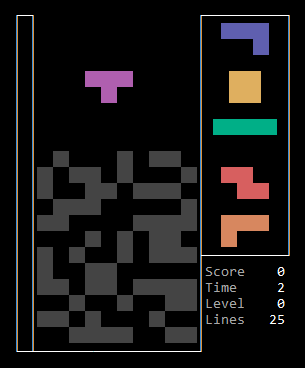
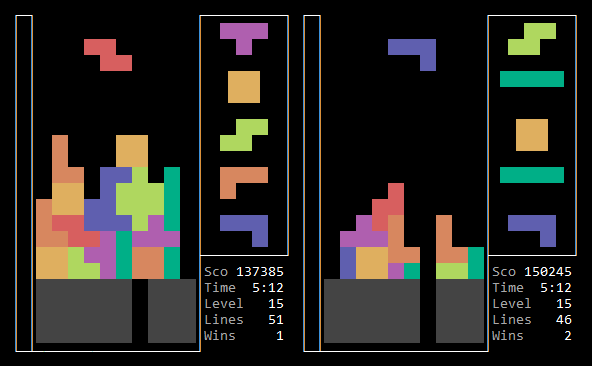

TEXTRADS
[ About | Install | Run | Source | Uninstall | Keymapping | Modes | Aesthetic | Playfield | Level | AI | Rotation System | Lock Delay | Garbage | Randomizer | Delayed Auto Shift (DAS) | Attract Mode | Leaderboards | Netplay | License ]
Textrads is an xterm implementation of the classic block-stacking puzzle game, where players arrange falling tetrominoes to form horizontal lines that disappear, with the goal of prolonging the pile from reaching the top. Its name is a portmanteau of “text”, the medium of terminals, and “tetrads”, another word for the plummeting pieces.
Textrads combines a modern aesthetic with old-school gameplay. It supports multiple single-player modes, a Vs. AI mode, and a two-player mode via peer-to-peer netplay. But it lacks hard drop, ghost piece, and hold piece mechanics. It has no music or sound effects. And it relies on the operating system’s autorepeat for DAS.
Here's a clip of Textrad's attract mode:
Textrads is a Java app bundled into in a single jar. To install Textrads, download the jar, and put it into a directory of your choice.
Textrads requires Java 8+ and an xterm terminal emulator. For Unix-like operating systems, open and maximize a console, navigate to the directory containing textrads.jar, and run:
java -jar textrads.jar ⮺
For Windows, the best option is the Windows Subsystem for Linux (WSL). If WSL is unavailable, open a Command Prompt, navigate to the directory containing textrads.jar, and run:
javaw -jar textrads.jar ⮺
That command executes Textrads in a Swing-based xterm terminal emulator included in the jar.
The source is available here.
Textrads creates a subdirectory called data to store preferences and leaderboards. To uninstall Textrads, delete textrads.jar along with that subdirectory.
Press K on the main menu to adjust the keymapping. The defaults appear below.
| Action | Key |
|---|---|
| Shift Left | 🠄 |
| Shift Right | 🠆 |
| Soft Drop | 🠇 |
| Rotate Counterclockwise | Z |
| Rotate Clockwise | X |
| Pause | Enter |
| Give Up | Esc |
Xterm limitations restrict the keymapping to printable character keys, the arrow keys, the function keys, and the following keys: Backspace, Delete, End, Enter, Esc, Home, Insert, Page Down, Page Up, and Tab.
Textrads is built on top of a pure-Java library for text-based user interfaces called Lanterna that provides elements with the distinctive blue-background look-and-feel reminiscent of text mode DOS applications, such as edit, Norton Utilities, WordPerfect, QBasic, Borland’s IDEs, and many more. However, Textrads taps into a lower-level of Lanterna to deliver custom components with a visual style evoking Bulletin Board Systems of the pre-internet era. Users navigate through menus of key-bound items:
Textrads adapts the layout of its components based on the available screen space, and it uses two different scales for displaying graphics. It alters its rendering behavior at runtime by using Lanterna’s ability to detect window resizing:


Textrads outputs 256-color ANSI escape codes. Since terminal users commonly customize the original sixteen colors, particularly the background color, Textrads avoids them for a consistent chromatic experience. Unfortunately, the restricted palette constrained the animals on the congratulations screen to sixteen shades of gray:

Despite the opportunity for “true color” animals with the vast palette of 24-bit color ANSI escape codes, Textrads opted not to use them due to limited adoption of the standard.
The images on the congratulations screen and the PSA screens consist of rectangular Right Half Blocks (U+2590) rather than square Upper Half Blocks (U+2580) because tests across multiple terminal emulators revealed Right Half Blocks render consistently, whereas adjacent Upper Half Blocks and related block elements experience visual discontinuities around adjoining seams. The stretched-pixel look evokes memories of the era of slow internet connections, a time when web browsers rendered a low-resolution version of interlaced GIFs that progressively improved with each download pass.
As for the game, Textrads borrows visual elements of Tetr.io, particularly the colors, the frame, the preview queue, the attack bar, and the stats. But, since its mechanics are based off DX, there is no hold space or ghost piece.
Textrads employs the standard 20 rows × 10 columns playfield. Tetrominoes spawn at (4,0), the cell with the black dot:
If a spawned tetromino overlaps a playfield block, it’s game over by block out.
If a tetromino partially locks into the vanish zone—the region above the playfield ceiling—the game truncated it. Similarly, if garbage rows lift blocks into the vanish zone, the game deletes them. However, the player can rotate the falling piece into the vanish zone, temporarily hiding part or all of it from view.
The player selects a starting level (0–29) at the beginning of all modes. Except for Constant Level mode, the level advances as the player progresses per:
$currentLevel = max(startingLevel, \big\lfloor \frac{clearedLines}{10} \big\rfloor)$
The games determines the number of frames per gravity drop on a given level via:
$framesPerDrop_0 = 52$
$framesPerDrop_{30} = 2$
$\lambda = \frac{1}{30} ln(\frac{framesPerDrop_0}{framesPerDrop_{30}})$
$framesPerDrop_{level} = framesPerDrop_0 e^{-\lambda \: level}$
The table and plots below describe the first thirty levels:
| level | frames/drop | drops/frame |
|---|---|---|
| 0 | 52.000000 | 0.019231 |
| 1 | 46.648487 | 0.021437 |
| 2 | 41.847719 | 0.023896 |
| 3 | 37.541015 | 0.026638 |
| 4 | 33.677530 | 0.029693 |
| 5 | 30.211651 | 0.033100 |
| 6 | 27.102458 | 0.036897 |
| 7 | 24.313243 | 0.041130 |
| 8 | 21.811077 | 0.045848 |
| 9 | 19.566419 | 0.051108 |
| 10 | 17.552766 | 0.056971 |
| 11 | 15.746346 | 0.063507 |
| 12 | 14.125831 | 0.070792 |
| 13 | 12.672089 | 0.078914 |
| 14 | 11.367958 | 0.087967 |
| 15 | 10.198039 | 0.098058 |
| 16 | 9.148521 | 0.109307 |
| 17 | 8.207013 | 0.121847 |
| 18 | 7.362399 | 0.135825 |
| 19 | 6.604707 | 0.151407 |
| 20 | 5.924992 | 0.168777 |
| 21 | 5.315229 | 0.188139 |
| 22 | 4.768219 | 0.209722 |
| 23 | 4.277504 | 0.233781 |
| 24 | 3.837290 | 0.260601 |
| 25 | 3.442381 | 0.290497 |
| 26 | 3.088112 | 0.323822 |
| 27 | 2.770303 | 0.360971 |
| 28 | 2.485201 | 0.402382 |
| 29 | 2.229440 | 0.448543 |
| 30 | 2.000000 | 0.500000 |
As a piece descends, the game increases or decreases the integer number of frames per gravity drop to ensure it achieves the fractional values listed above in the average.
The AI computes the optimal placement by evaluating all reachable, combinational positions of the current piece and the next piece, accounting for any lines removed when each piece locks, among many other factors. As the AI maneuvers the falling tetromino into place, it concurrently calculates the optimal placement of the next piece for all twenty potential accumulated-garbage attacks, ensuring preparedness for any spawn scenario without pausing the game to think.
The difficulty value (0–29) entered by the player at game start determines the speed at which the AI moves the falling tetromino. To convert from difficulty to frames per move, the game employs the same formulae used to compute frames per drop:
$framesPerMove_0 = 52$
$framesPerMove_{30} = 2$
$\lambda = \frac{1}{30} ln(\frac{framesPerMove_0}{framesPerMove_{30}})$
$framesPerMove_{difficulty} = framesPerMove_0 e^{-\lambda \: difficulty}$
In attract mode, the Vs. demo pits one instance of the AI against another. Since both receive the same piece sequence, one AI calculates the second-best position, instead of the optimal position, to avoid identical placements.
Textrads’ rotation system is a modified version of DX’s rotation system. The table below depicts the steps of clockwise rotation from left to right.
Each orientation consists of four blocks located relative to an origin cell marked by a black dot. The L-, T-, J-, S-, and Z-tetrominoes rotate about their origin cells. But the I-tetromino rotates about the upper-right corner of its origin cell, the cyan dots. And, while the O-tetromino does not spin, it conceptually rotates about the lower-right corner of its origin cell, another cyan dot.
Since the I-tetromino's origin cells in the column-2 and -3 orientations do not contain blocks, the player can translate the I-tetromino in those orientations to coordinates outside the playfield boundaries, though the effect is invisible to the player.
Column 0 contains the spawn orientations. Contrastingly, in DX’s rotation system, the S-, Z-, and I-tetrominoes spawn in the column-2 orientations.
If rotation per the table above overlaps the tetromino with a playfield block or it extends the tetromino beyond the playfield boundaries, then the game tries rotation about an alternate pivot. The process is equivalent to translating the tetromino by one cell in a direction determined by its orientation, followed by rotating the tetromino per the table above. A complete turn about the alternate pivot translates the tetromino four times in a diamond pattern:
The following table shows the steps of clockwise rotation about the alternate pivot from left to right.
While the I-tetromino moves in the diamond pattern, it effectively rotates about the grid point denoted by the cyan dots.
This rotation system inherits a flaw from DX’s: the player can rotate a piece against a wall to translate it upwards, as shown below.
The game uses the formula below to determine the lock delay on a given level.
$framesPerLockDelay_{level} = max(32, round(framesPerDrop_{level} + 4))$
Gravity and soft drops reset the lock delay timer. And, unlike DX's rotation system, rotation about the alternate pivot does not affect the gravity drop timer. The player cannot infinitely avoid lock by rotating a tetromino back-and-forth in a playfield corner.
Random garbage appears in Garbage Heap mode and Rising Garbage mode:

It consists of lines with holes that manifest with probabilities based on the tenth row of Pascal’s triangle, such that the ones at both ends of the triangle row were changed to zeros to avoid completely empty and completely filled lines:
| Holes | Probability |
|---|---|
| 0 | 0.000000 |
| 1 | 0.009785 |
| 2 | 0.044031 |
| 3 | 0.117417 |
| 4 | 0.205479 |
| 5 | 0.246575 |
| 6 | 0.205479 |
| 7 | 0.117417 |
| 8 | 0.044031 |
| 9 | 0.009785 |
| 10 | 0.000000 |
The distribution is approximately normal, where:
$\mu = 5,\:\sigma = \dfrac{511}{126\sqrt{2\pi}},\:p(h) = \dfrac{1}{\sigma\sqrt{2\pi}}e^{-\frac{1}{2}(\frac{h-\mu}{\sigma})^2}$
In Rising Garbage mode, during certain lines-cleared ranges, a random garbage row ascends from the floor every $n$ spawns:
| $cleared \bmod 60$ | $n$ |
|---|---|
| 0–9 | 6 |
| 20–29 | 16 |
| 50–59 | 12 |
In Vs. AI mode and Vs. Human mode, when a player concurrently clears multiple lines, garbage rows containing a single hole rise from the floor of the opponent’s playfield. The game randomly positions the hole at the start and after every nine garbage rows. Both players receive the same hole sequence:

The number of simultaneous clears determines the number of garbage rows sent to the opponent per the following table.
| Clears | Garbage Rows |
|---|---|
| 1 | 0 |
| 2 | 1 |
| 3 | 2 |
| 4 | 4 |
In applying that table, the game treats normal blocks and garbage blocks equally, enabling retaliatory attacks, where the players exchange garbage.
The game waits for a player to lock a piece before inserting accumulated garbage from one or more attacks. The number of rows to insert is capped at twenty.
Textrads employs a 7-piece bag randomizer. Meaning, it deals out all seven tetrominoes as if they were randomly drawn from a bag. Then it refills and repeats. For the current piece and the preview of the next five pieces, the game prepopulates and maintains a six-piece buffer.
At the start of the Vs. modes, the game randomly selects, with equal probability, one of the ten columns for the garbage rows hole. Every nine garbage rows, it randomly selects a new hole position, again with equal probability. If necessary, the game continues to make new selections until the new column differs from the previous one.
Separate pseudorandom number generators drive the piece sequence and the hole sequence randomizers, ensuring they do not influence each other. In the Vs. modes, each player receives the same pseudorandom number generator seeds, guaranteeing the same piece and holes sequences regardless of the players’ actions.
Xterms relay key pressed events to applications, but not key released events. This limitation inhibits a software-level DAS. However, the operating system generates a key pressed event when the player presses a key, and after a brief delay, it generates repeated key pressed events at a constant rate until the player releases the key. That behavior resembles DAS. And most operating systems provide a way to customize the autorepeat delay and rate.
The operating system’s autorepeat mechanism acts on all keys, while DAS normally applies to horizontal translation only, hence the “shift” in its name. In Textrads, if the player holds down a rotation key, the falling piece spins after a brief delay, an unusual, but not detrimental behavior. On the other hand, the player experiences the autorepeat delay when holding down the soft drop key, which may not be desired.
To prevent the player from inadvertently soft dropping to a newly spawned piece, Textrads ignores soft drop events until the player releases the key after soft dropping a piece onto the pile. Since, as just mentioned, xterms do not provide key released events, Textrads uses the period between soft drop events to differentiate the initial key pressed event from the autorepeated ones.
The operating system’s autorepeat mechanism typically responds to individual keys only, as opposed to key combinations. This negatively impacts control. For example, while auto-shifting, if the player presses a rotation key, the auto-shift will abruptly stop.
The only recourse around these issues is hypertapping, as it avoids autorepeat entirely.
Textrads’ attract mode draws inspiration from the captivating presentations of classic arcade video games that allured passers-by to dispense with their money. At startup, attract mode announces itself by stacking falling lines to form the game's title in a blocky font, an animation that evokes gameplay. Then an obligatory copyright notice appears alongside a pulsating “PRESS ENTER” in place of the traditional “INSERT COIN”.
If the player resists the urge to press Enter for seven seconds, attract mode advances to an AI-controlled demo accompanied by a flashing “PRESS ENTER”, which makes it clear play has yet to begin.
After twenty-five seconds of demo, attract mode displays a leaderboard for seven seconds.
Finally, attract mode displays one of three public service announcements for four seconds:
Textrads saves today’s top ten achievements and the top ten achievements of all time for all modes except for Vs. Human. One of those leaderboards prominently appears in each attract mode loop.
Upon setting a record, the game presents a congratulatory screen where players enter their initials. It randomly displays one of twenty-six different animals as a reward.
Textrads persists the leaderboards as a separate file in the data subdirectory. To clear the all-time best records, delete the all-time-*.dat files.
In Vs. Human mode, the players establish a socket connection between two instances of Textrads. One instance acts as the server, and the other acts as the client. The server’s job is to keep the client’s memory model consistent with its own. It operates as the source of truth.
The peers treat the connection as unreliable. To that end, when they connect, the client disregards anything in its memory model, and instead, it asks the server what it should do. If play has yet to begin, the server instructs the client to gather information from the player, such as the starting level. The client does so, and it submits the result back to the server in a request-response cycle resembling HTML forms. Concurrently, the server prompts its player for the same information.
When play commences, or if it already began and the client reconnected, the server sends the full game state of both players to the client. From that point forward, the client transmits key presses entered by its player to the server. The server updates its copy of the game state, for each frame, with key presses from its player and those submitted by the client player. Then the server sends the client the full set of key presses it just applied. The client uses them to update its copy of the game state, maintaining consistency. This works because the update operation reacts deterministically to player inputs and the game state transmitted by the server includes the current seeds of the pseudorandom number generators that drive the piece sequence and garbage row hole sequence randomizers.
With this architecture, intermittent network disruptions do not end a game in progress. Bouncing the client does not either. In both situations, the server pauses the game until the client returns. However, terminating the server ends the game by destroying the source of truth.
Textrads is free software licensed under GPLv3.
© 2023 meatfighter.com |